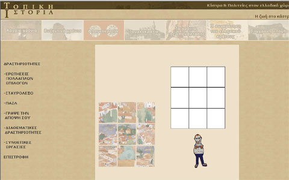

| Εγχειρίδιο Χρήσης |
6.3 ΠαζλΣτη δραστηριότητα των παζλ ο χρήστης καλείται να «συναρμολογήσει» μία εικόνα που είναι χωρισμένη σε εννέα κομμάτια. Ο χρήστης μπορεί να μετακινήσει κάποιο κομμάτι κάνοντας κλικ πάνω του και κρατώντας το «ποντίκι» πατημένο να το μετακινήσει στο σημείο που νομίζει σωστό. Σε περίπτωση που ο χρήστης μάντεψε σωστά τη θέση του κομματιού αυτό δε μετακινείται. Σε αντίθετη περίπτωση το κομμάτι επανέρχεται στην αρχική του θέση. Ο χρήστης μπορεί να μεταφερθεί σε επόμενο παζλ κάνοντας κλικ στο κουμπί «Επόμενο» στο κάτω μέρος της σελίδας.  Εικόνα 6.3.1 Παζλ |